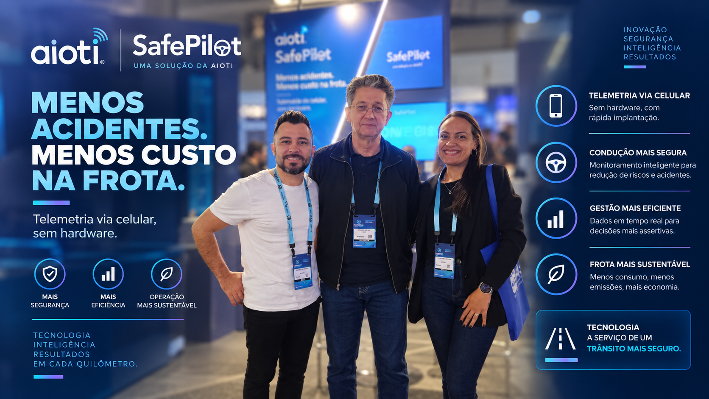

A Netfleet resolve o problema de quem sempre ficou de fora da telemetria: o motorista autônomo, sem hardware fixo no veículo.
O nosso propósito é usar a tecnologia para salvar vidas, reduzindo acidentes de trânsito no transporte profissional de cargas. No Brasil, ocorrem cerca de 37 mil mortes por ano no trânsito e mais de cinco vezes esse número de pessoas com sequelas graves.
O aplicativo é o sensor
Desenvolvemos um sistema de telemetria comportamental operado exclusivamente pelo smartphone do motorista via aplicativo, sem a necessidade de instalar nenhum tipo de hardware ou equipamento no veículo. O aplicativo utiliza os sensores de acelerômetro e GPS do celular para detectar excesso de velocidade, frenagens bruscas, acelerações severas, curvas acentuadas e manuseio do celular ao dirigir.
Ranking em vez de punição
A plataforma utiliza gamificação. O motorista acompanha sua nota e posição em um ranking ao final de cada viagem. As empresas utilizam esses dados para criar campanhas de reconhecimento, premiar os melhores condutores e direcionar treinamentos para os que apresentam menor pontuação.
O resultado já foi testado em escala nacional, no programa Motorista Série A do SEST SENAT.
Ao longo de 32 semanas de acompanhamento via aplicativo, a curva de desempenho de todos os condutores participantes apresentou uma evolução expressiva na redução de infrações e manobras arriscadas.
Raio-X: Netfleet / Driver Série A
- O que é?
- Plataforma de telemetria comportamental via aplicativo, sem necessidade de hardware instalado no veículo.
- Qual problema resolve?
- Alto custo de instalação de telemetria tradicional e falta de monitoramento para motoristas autônomos e agregados.
- Qual a principal inovação?
- Uso dos sensores do próprio smartphone (GPS e acelerômetro) combinado a gamificação e ranking de desempenho.
- Para onde vai?
- Modelo White Label, integrando a telemetria comportamental a aplicativos de seguradoras e transportadoras.